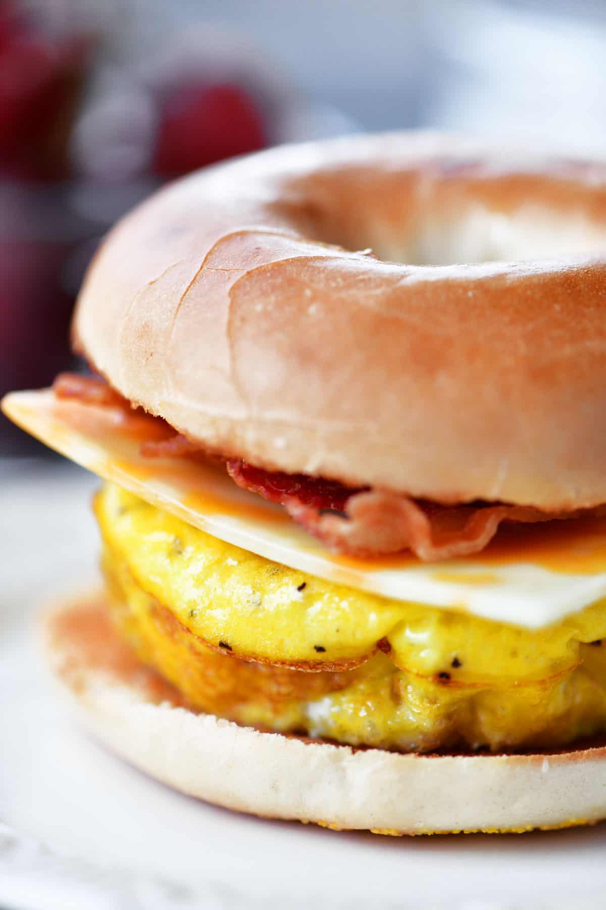

Eggy Bagels
About this recipe

One of my favourite breakfasts in the world, a delish, warm, crunchy and soft bagel, a ooey gooey egg and some beautiful melted cheese and vegan bacon. It's a crowd pleaser and definitely something to get you started on a Saturday morning
Ingredients
- A bagel of your liking, my favourite are everything bagels
- Your favourite cheese, my recommendation is a cheddar or edam
- Vegan bacon of your choice
- 1 large egg
- Salt and pepper to taste
- A sauce of your choosing, my personal fav being Frank's Red Hot Buffalo
Steps
- Step one is to toast your bagels in the toasted, on bagel mode of course
- Next, in a frying pan, using a little butter or some oil, crack your egg in. You can keep it sunny side up, or be a little fancy and do an over easy
- In the same pan as your egg if you have room, fry up 2 vegan bacon strips for 2 minutes
- Next, it's time to assemble your bagel. I like to layer the bacon on the bottom, cheese in the middle and egg on top for ultimate ooey-ness
- Lastly, add your seasonings and sauce of your choice and make sure to eat it while it's hot